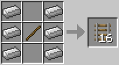

Redstone Devices
What can be Activated by Redstone?
These are objects that do something when they receive a redstone signal.
Note Blocks and JukeBox
JukeBox
Every music disc generates a signal of a different length; for instance, cat sends a two-redstone signal, while ward sends one that is 10 blocks long. You can experiment to discover the signal of each disc, or you can find them on the wiki. By placing a disc inside a jukebox you can open doors or activate massive redstone devices ,with the correct wiring. One of the simplest ways to make a redstone device using a jukebox is to lead a redstone trail to a door.
Note Blocks
These play musical notes, depending on their tuning (right click to tune) and the substance on which they are placed. You can also
use redstone to activate the note blocks which allows players to replicate songs!
Minecart Rails
Three kinds of minecart rails respond to redstone signals.
Curved rails
When rails are placed to form a junction, one of the rails will curve to connect, two of the tracks. A redstone signal will cause the curved rail to switch orientation, allowing tansportation in a different direction.Powered Rails
These rails push minecarts along the track when switched on, otherwise they act as brakes.